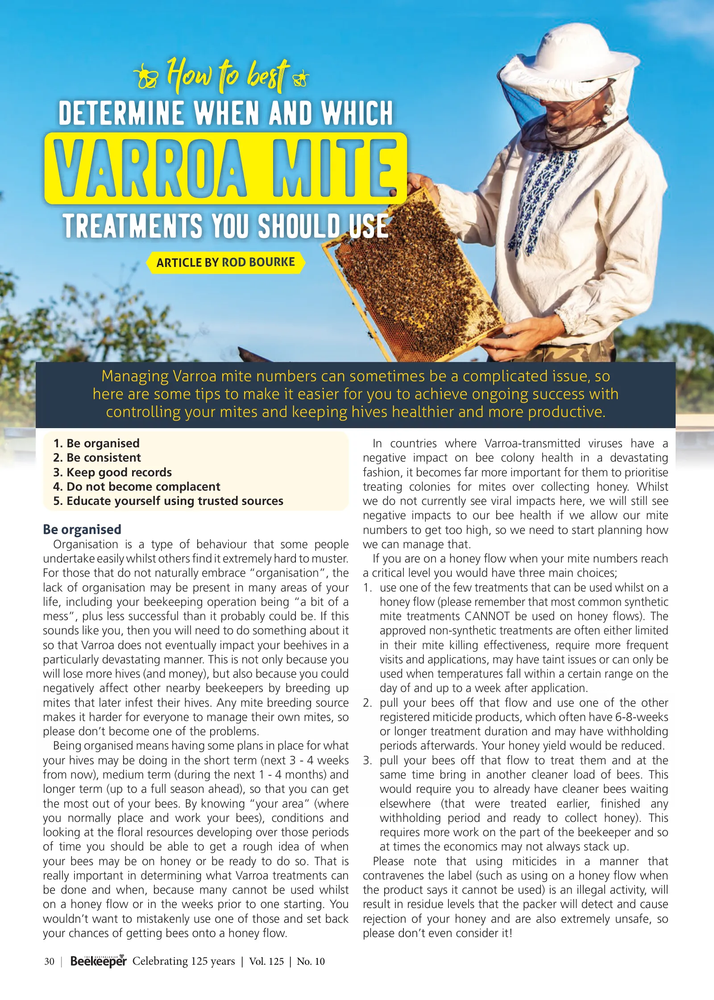

1. Be organised
2. Be consistent
3. Keep good records
4. Do not become complacent
5. Educate yourself using trusted sources
Be organised
Organisation is a type of behaviour that some people
undertake easily whilst others find it extremely hard to muster.
For those that do not naturally embrace “organisation”, the
lack of organisation may be present in many areas of your
life, including your beekeeping operation being “a bit of a
mess”, plus less successful than it probably could be. If this
sounds like you, then you will need to do something about it
so that Varroa does not eventually impact your beehives in a
particularly devastating manner. This is not only because you
will lose more hives (and money), but also because you could
negatively affect other nearby beekeepers by breeding up
mites that later infest their hives. Any mite breeding source
makes it harder for everyone to manage their own mites, so
please don’t become one of the problems.
Being organised means having some plans in place for what
your hives may be doing in the short term (next 3 - 4 weeks
from now), medium term (during the next 1 - 4 months) and
longer term (up to a full season ahead), so that you can get
the most out of your bees. By knowing “your area” (where
you normally place and work your bees), conditions and
looking at the floral resources developing over those periods
of time you should be able to get a rough idea of when
your bees may be on honey or be ready to do so. That is
really important in determining what Varroa treatments can
be done and when, because many cannot be used whilst
on a honey flow or in the weeks prior to one starting. You
wouldn’t want to mistakenly use one of those and set back
your chances of getting bees onto a honey flow.
In countries where Varroa-transmitted viruses have a
negative impact on bee colony health in a devastating
fashion, it becomes far more important for them to prioritise
treating colonies for mites over collecting honey. Whilst
we do not currently see viral impacts here, we will still see
negative impacts to our bee health if we allow our mite
numbers to get too high, so we need to start planning how
we can manage that.
If you are on a honey flow when your mite numbers reach
a critical level you would have three main choices;
1. use one of the few treatments that can be used whilst on a
honey flow (please remember that most common synthetic
mite treatments CANNOT be used on honey flows). The
approved non-synthetic treatments are often either limited
in their mite killing effectiveness, require more frequent
visits and applications, may have taint issues or can only be
used when temperatures fall within a certain range on the
day of and up to a week after application.
2. pull your bees off that flow and use one of the other
registered miticide products, which often have 6-8-weeks
or longer treatment duration and may have withholding
periods afterwards. Your honey yield would be reduced.
3. pull your bees off that flow to treat them and at the
same time bring in another cleaner load of bees. This
would require you to already have cleaner bees waiting
elsewhere (that were treated earlier, finished any
withholding period and ready to collect honey). This
requires more work on the part of the beekeeper and so
at times the economics may not always stack up.
Please note that using miticides in a manner that
contravenes the label (such as using on a honey flow when
the product says it cannot be used) is an illegal activity, will
result in residue levels that the packer will detect and cause
rejection of your honey and are also extremely unsafe, so
please don’t even consider it!
Managing Varroa mite numbers can sometimes be a complicated issue, so
here are some tips to make it easier for you to achieve ongoing success with
controlling your mites and keeping hives healthier and more productive.
ARTICLE BY ROD BOURKE
30 |
Celebrating 125 years | Vol. 125 | No. 10